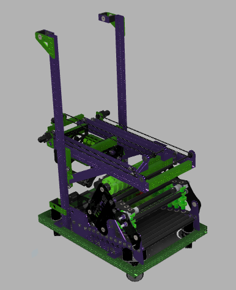
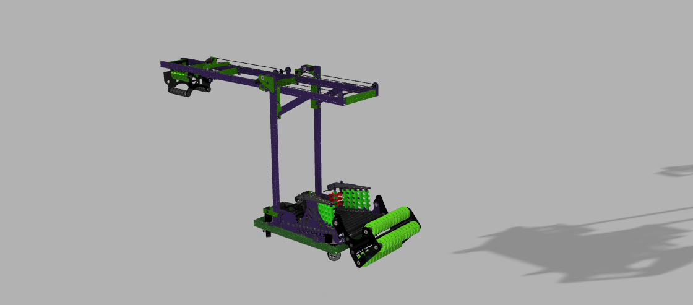
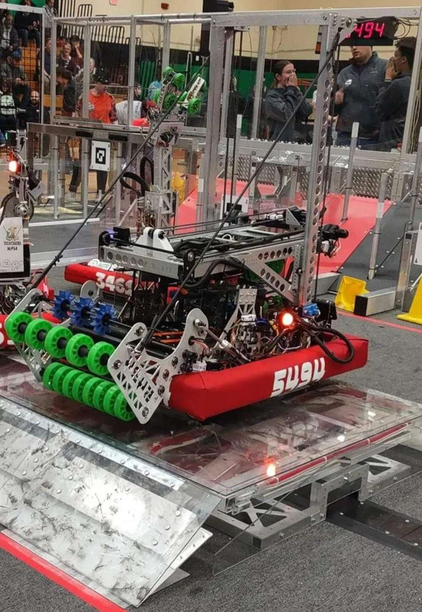
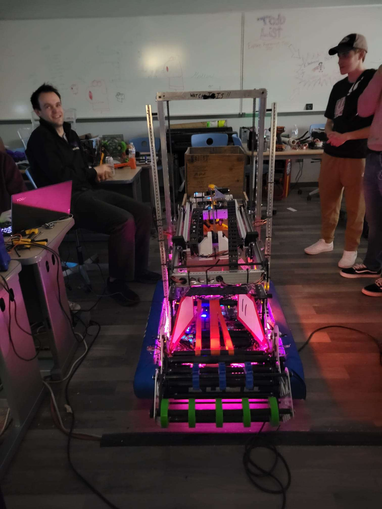

Project
Robot2023
The robot code for FIRST Robotics Team 5494, built on WPILib and managed with Gradle, for the 2023 FRC game Charged Up. I wrote this during my senior year of high school as a student on the team, handling programming and strategy.
My contributions
Control systems
I worked on the swerve drivetrain, including the joystick-driven teleop control and a closed-loop auto-balance routine for the charge station. That routine reads pitch off a Pigeon2 gyro and feeds it into a proportional control loop that drives the robot forward or backward to level itself out, without any driver input. Each swerve module also runs its own PID loop to hold a commanded wheel angle.
Automated scoring sequences
Scoring a game piece meant coordinating the arm, lifter, intake, and grabber together. I wrote command groups that chain all of that into a single button press: close the grabber on the piece, raise the lifter and arm to the target height, release, then return everything to a safe starting position. The same idea carried into autonomous, where we built separate scoring and mobility routines for each starting position on both alliance colors.
PID controller tuning
Each arm and lifter mechanism runs its own PID loop through its SparkMax motor controller, and I tuned the P and D gains for each one individually, since the outer arm, inner arm, grabber, and grabber pivot all behave differently under load and needed different limits on output range to avoid overshooting.
About the team
FIRST Robotics Team 5494 competes in the FIRST Robotics Competition, where teams design, build, and program a robot each season to compete in a new game. I was on the team as a student and worked on programming and strategy. I now mentor the team in the same areas, along with scouting, design, and outreach.
Photos and video



